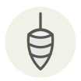

Banana blossom
Fleur de bananier
| Latin name | Musa spp. |
|---|---|
| Family | Vegetables |
| Origin | Southeast Asia |
| Season (France) | All year |
| Flavour | Bitter · Fresh · Mild |
| Typical price (France) | 4–7 €/pièce |
What it is
The purple cone hanging below a banana bunch is the flower bud, and growers cut it off so the fruit above fills out — which makes it a by-product of the banana harvest rather than a crop of its own. Strip the bracts and the pale heart inside behaves exactly like an artichoke, browning included.
In the kitchen
Have a bowl of acidulated water standing before the knife touches it — shredded heart browns in under two minutes. Oil your hands and the blade first: the sap is a latex that stains black and does not wash off.
Goes with
Lime Coconut milk Chili pepper Peanut Cilantro / Coriander Fish sauce
Same species
Something wrong here, or missing? Tell us